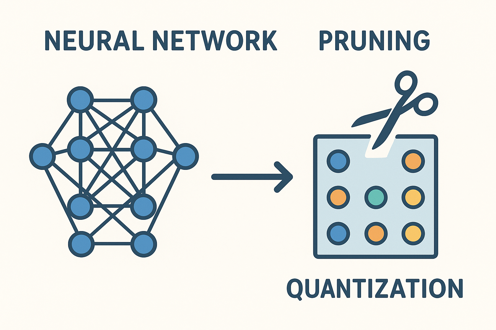

flowchart TD
A[Start Training] --> B{Pruning Strategy}
B -->|One-Shot| C[Remove All Weights at Once]
B -->|Gradual| D[Remove Weights Incrementally]
B -->|Iterative| E[Cycle: Prune-Train-Recover]
C --> F[Simple Implementation]
D --> G[Better Accuracy Preservation]
E --> H[Highest Accuracy Retention]
F --> I[May Cause Accuracy Drop]
G --> J[Network Adapts Gradually]
H --> K[Computationally Expensive]
Complete Guide to Quantization and Pruning

Introduction
Model compression techniques are essential for deploying deep learning models in resource-constrained environments. Two of the most effective approaches are quantization and pruning, which can significantly reduce model size, memory usage, and inference time while maintaining acceptable performance.
Why Model Compression Matters
Model compression addresses several critical challenges in deep learning deployment:
Key Benefits of Model Compression
- Memory Efficiency: Reduced memory footprint enables deployment on mobile devices and edge hardware
- Inference Speed: Faster computations through reduced precision arithmetic and fewer operations
- Energy Consumption: Lower power requirements for battery-powered devices
- Cost Reduction: Decreased cloud computing costs and hardware requirements
- Accessibility: Enables AI deployment in environments with limited computational resources
Quantization
Quantization reduces the precision of model weights and activations from floating-point representations (typically 32-bit) to lower-bit representations (8-bit, 4-bit, or even binary).
Fundamentals of Quantization
Uniform Quantization
The most common form maps continuous values to a finite set of discrete levels:
\[Q(x) = \text{round}\left(\frac{x - \text{zero\_point}}{\text{scale}}\right) + \text{zero\_point} \tag{1}\]
Where:
scale: The step size between quantization levelszero_point: The value that maps to zero in the quantized representation
Asymmetric vs Symmetric Quantization
Symmetric Quantization: Zero point is at the center of the range
- Simpler implementation
- Better for weights that are roughly centered around zero
- Formula: \(Q(x) = \text{round}(x / \text{scale})\)
Asymmetric Quantization: Zero point can be anywhere in the range
- Better utilization of the quantization range
- More suitable for activations (often non-negative)
- Handles skewed distributions better
Types of Quantization
Post-Training Quantization (PTQ)
Quantizes a pre-trained model without retraining:
Static PTQ: Uses a calibration dataset to determine quantization parameters
- Faster deployment
- No training data required
- May have accuracy degradation for complex models
Dynamic PTQ: Determines quantization parameters at runtime
- Better accuracy than static PTQ
- Slightly higher inference overhead
- No calibration dataset needed
Quantization-Aware Training (QAT)
Simulates quantization effects during training:
- Higher accuracy preservation
- Requires retraining the model
- Longer development time but better results
Bit-width Considerations
| Bit-width | Compression | Accuracy Trade-off | Use Case |
|---|---|---|---|
| 8-bit (INT8) | 2-4x | Minimal | Most common, well-supported |
| 4-bit | Up to 8x | Moderate | Inference-only scenarios |
| Binary/Ternary | Up to 32x | Significant | Extreme compression needs |
Mixed-Precision Quantization
Different layers use different precisions based on sensitivity analysis:
- Critical layers (e.g., first and last layers) kept at higher precision
- Less sensitive layers quantized more aggressively
- Automated search algorithms determine optimal bit allocation
Pruning
Pruning removes redundant or less important connections, neurons, or entire layers from neural networks.
Types of Pruning
Magnitude-Based Pruning
Removes weights with the smallest absolute values:
- Simple to implement
- Works well for many architectures
- May not capture weight importance accurately
Gradient-Based Pruning
Considers gradients to determine weight importance:
- Fisher Information: Uses second-order derivatives
- SNIP (Single-shot Network Pruning): Prunes before training
- GraSP: Gradient Signal Preservation
Lottery Ticket Hypothesis
Identifies sparse subnetworks that can be trained from scratch:
- Iterative magnitude pruning
- Rewinding to early training checkpoints
- Maintains original network performance
Pruning Granularities
Removes individual weights regardless of their position:
- Higher compression ratios possible
- Irregular sparsity patterns
- May not lead to actual speedup without specialized hardware
Removes entire structures (channels, filters, layers):
- Channel Pruning: Removes entire feature map channels
- Filter Pruning: Removes convolutional filters
- Block Pruning: Removes structured weight blocks
Benefits: - Guaranteed speedup on standard hardware - Maintains regular computation patterns - Easier to implement in existing frameworks
Balances compression and hardware efficiency:
- N:M sparsity (e.g., 2:4 sparsity removes 2 out of every 4 weights)
- Supported by modern hardware (NVIDIA Ampere architecture)
- Good compression with hardware acceleration
Pruning Schedules
Advanced Techniques
Knowledge Distillation with Compression
Combines compression with knowledge transfer:
- Teacher-student framework during compression
- Maintains performance while reducing model size
- Particularly effective for quantization
Neural Architecture Search (NAS) for Compression
Automated design of compressed architectures:
- Hardware-aware NAS considers deployment constraints
- Co-optimization of architecture and compression
- Differentiable NAS for quantization
Lottery Ticket Hypothesis Variants
Key Variants
SNIP (Single-shot Network Pruning):
- Prunes networks before training
- Uses gradient information for importance scoring
- Faster than iterative approaches
GraSP (Gradient Signal Preservation):
- Maintains gradient flow through the network
- Better performance on deep networks
- Considers layer-wise interactions
Implementation Examples
PyTorch Quantization Example
import torch
import torch.nn as nn
import torch.quantization as quant
# Define a simple model
class SimpleModel(nn.Module):
def __init__(self):
super().__init__()
self.conv1 = nn.Conv2d(3, 32, 3)
self.conv2 = nn.Conv2d(32, 64, 3)
self.fc = nn.Linear(64, 10)
def forward(self, x):
x = torch.relu(self.conv1(x))
x = torch.relu(self.conv2(x))
x = torch.flatten(x, 1)
x = self.fc(x)
return x
# Post-training quantization
model = SimpleModel()
model.eval()
# Prepare model for quantization
model.qconfig = quant.get_default_qconfig('fbgemm')
quant.prepare(model, inplace=True)
# Calibrate with sample data
# calibrate_model(model, calibration_data)
# Convert to quantized model
quantized_model = quant.convert(model, inplace=False)Pruning Example
import torch
import torch.nn.utils.prune as prune
# Apply magnitude-based unstructured pruning
model = SimpleModel()
parameters_to_prune = [
(model.conv1, 'weight'),
(model.conv2, 'weight'),
(model.fc, 'weight'),
]
# Prune 30% of weights globally
prune.global_unstructured(
parameters_to_prune,
pruning_method=prune.L1Unstructured,
amount=0.3,
)
# Make pruning permanent
for module, param in parameters_to_prune:
prune.remove(module, param)Structured Pruning Implementation
import torch.nn.utils.prune as prune
def channel_pruning(model, layer_name, amount):
"""Prune channels based on L1 norm of filters"""
layer = getattr(model, layer_name)
# Calculate channel importance (L1 norm)
importance = torch.norm(layer.weight.data, p=1, dim=[1, 2, 3])
# Determine channels to prune
num_channels = len(importance)
num_prune = int(amount * num_channels)
if num_prune > 0:
_, indices = torch.topk(importance, num_prune, largest=False)
# Create pruning mask
prune.structured(layer, name='weight', amount=amount,
dim=0, importance_scores=importance)
# Example usage
channel_pruning(model, 'conv1', 0.5) # Prune 50% of channelsBest Practices
Quantization Best Practices
Quantization Guidelines
- Start with 8-bit quantization: Best balance of compression and accuracy
- Use calibration data: Representative of actual deployment data
- Layer sensitivity analysis: Identify which layers are most sensitive to quantization
- Gradual quantization: Start with less aggressive quantization and increase gradually
- Batch normalization folding: Combine BN parameters with preceding layer weights
Pruning Best Practices
Pruning Guidelines
- Sensitivity analysis: Determine which layers/channels are most important
- Gradual pruning: Remove weights incrementally during training
- Fine-tuning: Always fine-tune after pruning to recover accuracy
- Layer-wise pruning ratios: Different layers may benefit from different pruning ratios
- Structured over unstructured: Choose structured pruning for guaranteed speedup
Combined Approaches
Important Considerations
- Order matters: Generally prune first, then quantize
- Joint optimization: Consider both techniques simultaneously during training
- Hardware considerations: Align compression strategy with deployment hardware
- Validation throughout: Monitor accuracy at each compression stage
Tools and Frameworks
| Framework | Quantization | Pruning | Special Features |
|---|---|---|---|
| PyTorch | torch.quantization | torch.nn.utils.prune | TorchScript optimization |
| TensorFlow | Model Optimization Toolkit | Built-in pruning | TFLite for mobile |
| NVIDIA TensorRT | Automatic mixed precision | Layer fusion | High-performance inference |
| Intel Neural Compressor | Cross-framework support | Auto-tuning | Hardware-specific optimizations |
Specialized Tools
NVIDIA TensorRT:
- High-performance inference optimization
- Automatic mixed precision
- Layer fusion and kernel optimization
Intel Neural Compressor:
- Cross-framework quantization
- Automatic accuracy-driven tuning
- Hardware-specific optimizations
Apache TVM:
- Deep learning compiler stack
- Auto-tuning for different hardware
- Graph-level optimizations
ONNX Runtime:
- Cross-platform inference optimization
- Dynamic quantization
- Graph optimizations
Future Directions
Emerging Quantization Techniques
- Mixed-bit Networks: Different precisions for different operations
- Learned Quantization: Neural networks learn quantization parameters
- Hardware-Software Co-design: Quantization schemes designed for specific hardware
Advanced Pruning Methods
- Differentiable Pruning: End-to-end learning of sparse structures
- Dynamic Sparsity: Runtime adaptation of sparsity patterns
- Cross-layer Dependencies: Pruning decisions considering global network structure
Integration with Other Techniques
graph TD
A[Model Compression] --> B[Neural Architecture Search]
A --> C[Federated Learning]
A --> D[Continual Learning]
B --> E[Joint Architecture & Compression Optimization]
C --> F[Compression for Distributed Training]
D --> G[Maintaining Compression Benefits]
Hardware Considerations
- Specialized Accelerators: ASICs designed for sparse and low-precision computation
- In-memory Computing: Compression for neuromorphic and analog computing
- Edge AI Chips: Dedicated hardware for compressed model inference
Conclusion
Quantization and pruning are essential techniques for practical deep learning deployment. Success requires understanding the trade-offs between compression ratio, accuracy preservation, and hardware compatibility. The field continues to evolve with new methods that push the boundaries of what’s possible with compressed neural networks.
Key Takeaways
- Start with well-established techniques (8-bit quantization, magnitude pruning)
- Always validate on representative data and deployment hardware
- Consider the entire deployment pipeline, not just model accuracy
- Combine multiple compression techniques for maximum benefit
- Stay informed about hardware-specific optimizations and emerging methods
The future of neural network compression lies in automated, hardware-aware optimization that considers the full spectrum of deployment constraints while maintaining the intelligence and capabilities that make deep learning so powerful.
Appendix: Additional Resources
Code Repositories
Research Papers
- Lottery Ticket Hypothesis [@frankle2019lottery]
- Quantization and Training of Neural Networks [@jacob2018quantization]
- Structured Pruning Methods [@liu2017learning]
Datasets for Evaluation
- ImageNet for computer vision models
- GLUE benchmark for NLP models
- Common Voice for speech models